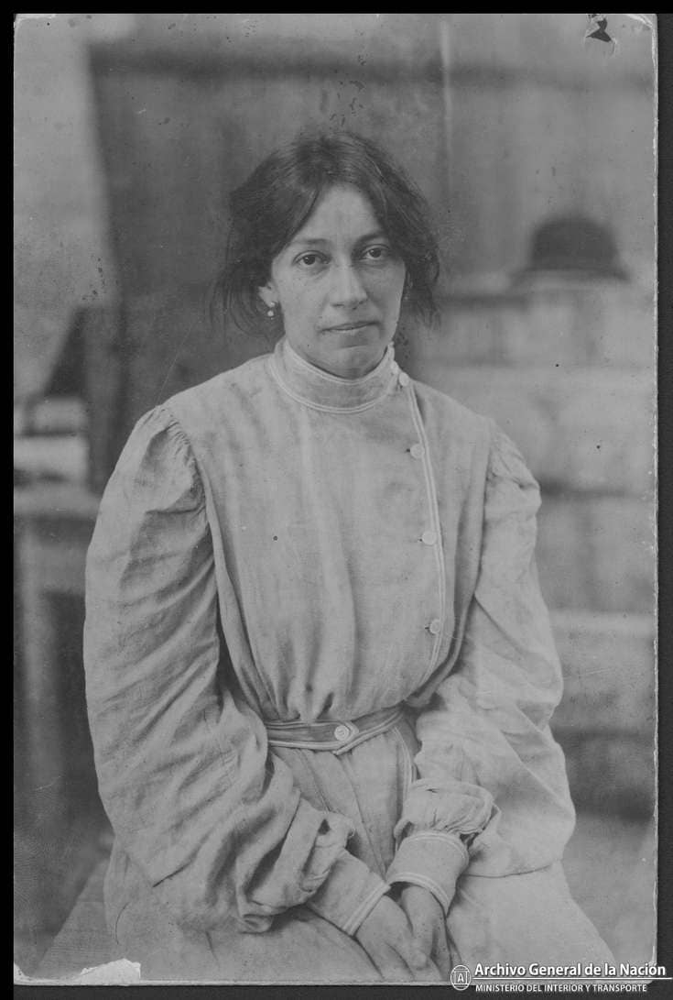
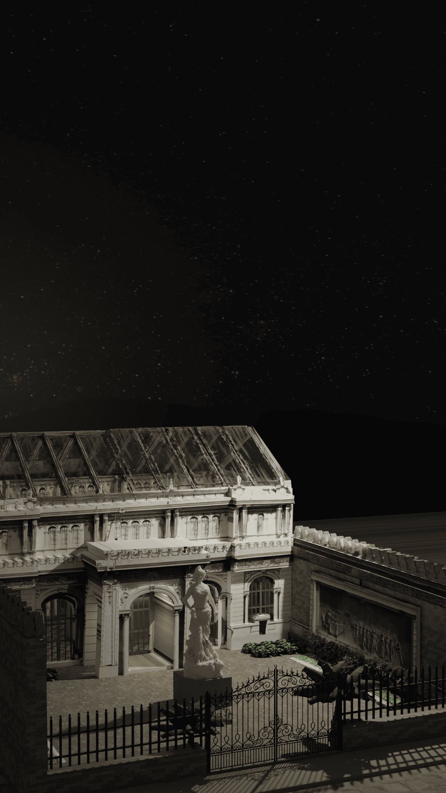
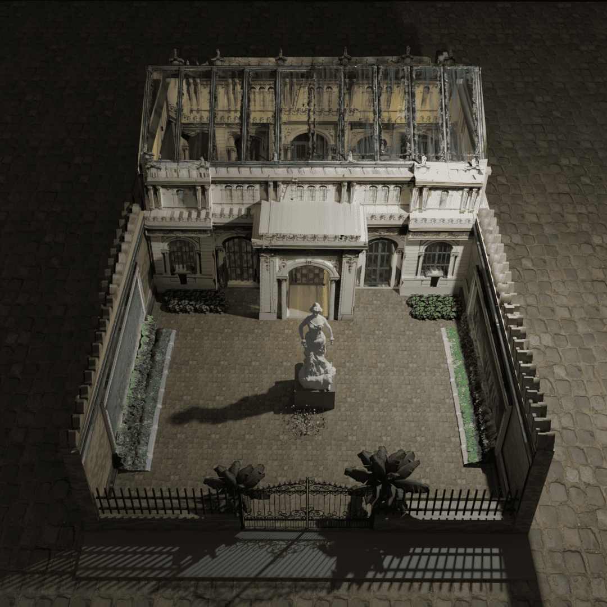
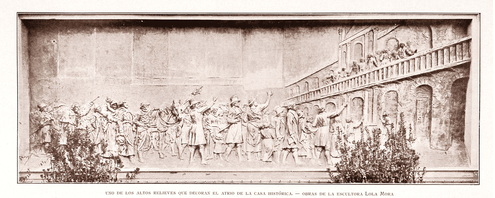
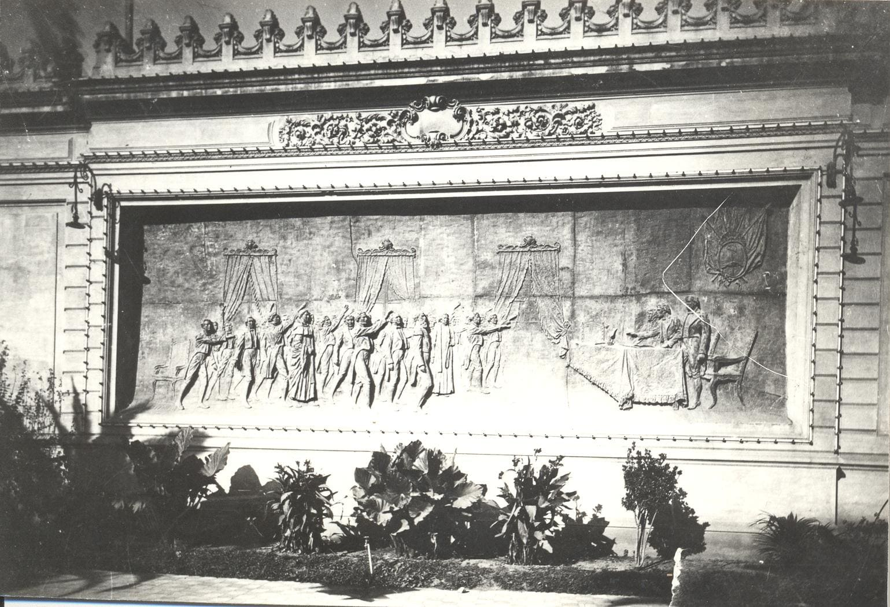
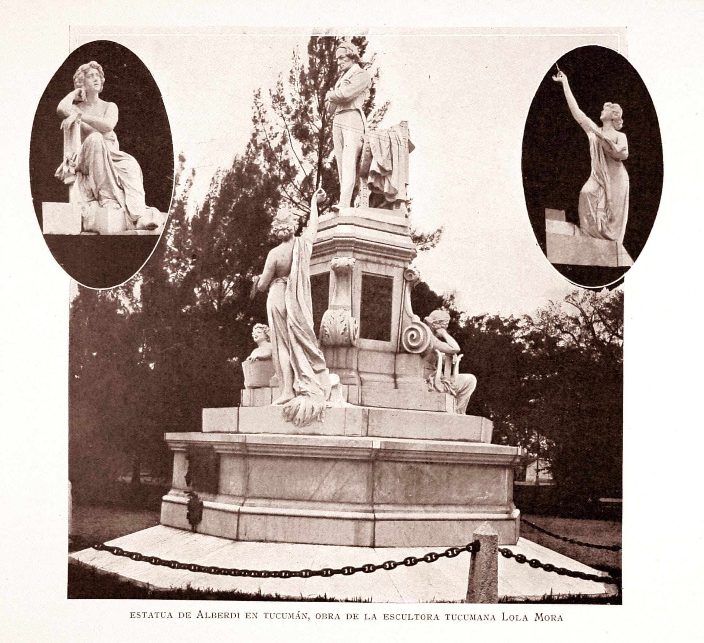
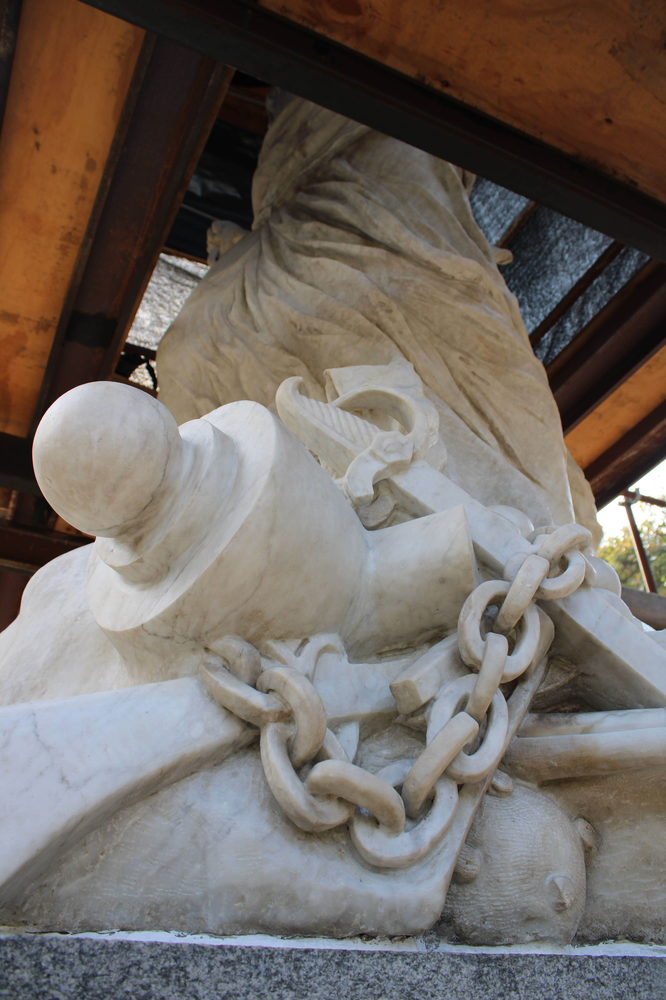

Museo Casa Histórica de la Independencia · Tucumán, Argentina
Lola Mora
La primera gran escultora de Argentina
1866 — 1936
Deslizá para explorar
Museo Casa Histórica de la Independencia · Tucumán, Argentina
La primera gran escultora de Argentina
1866 — 1936

I · Origen
La historia del nacimiento de Lola Mora es objeto de permanente debate entre historiadores tucumanos y salteños. El único documento fehaciente es una partida bautismal del Libro XI de la parroquia de Trancas, fechada el 22 de junio de 1867, que registra a "Dolores de edad de dos meses, hija legítima de Don Romualdo Mora y de Doña Regina Vega".
Basada en el acta bautismal de Trancas y los testimonios de la propia Lola, quien declaró explícitamente ser "nacida en Tucumán" en documentos oficiales como su acta de matrimonio. Los historiadores Carlos Páez de la Torre y Celia Terán sostienen que nació el 22 de abril de 1867.
En 1969, María Luisa Castiñeira de Campanella afirmó que Lola habría nacido en la estancia "El Dátil", en la localidad salteña de El Tala, posiblemente el 17 de noviembre de 1866. Esta versión contradice el documento parroquial, considerado más contundente por los biógrafos.
II · Obras en Tucumán
Al poco tiempo de inaugurar la fuente de Las Nereidas en Buenos Aires, Lola Mora viajó a Tucumán para comenzar proyectos monumentales: los murales para la Casa Histórica y las estatuas de "La Libertad" y de Juan Bautista Alberdi. El ministro de Obras Públicas, Emilio Civit, ya había ordenado suministrarle todos los elementos necesarios.
III · El Templete
La fachada de 1904
Edificio de estilo francés construido durante la presencia de Julio Argentino Roca para reemplazar el edificio del Correo. Los murales y la estatua de la Libertad encargados a la escultora Lola Mora, serían colocados en el patio diseñado por Charles Thays, que funcionaba como acceso al Templete.


IV · Los Relieves
Los dos grandes bajorrelieves de bronce que flanquean el patio de la Casa Histórica constituyen una narración visual de la epopeya argentina. El primero, titulado '25 de Mayo de 1810', captura la tensión y la euforia del pueblo en la Plaza de la Victoria, con figuras que parecen moverse hacia el espectador reclamando su destino.
El segundo, '9 de Julio de 1816', inmortaliza el momento solemne de la jura de la Independencia, destacando la dignidad de los congresales y la participación del pueblo en este acto fundacional.
Lola Mora logró en estas obras una profundidad de campo y un dinamismo inusuales para la época. A diferencia de las representaciones estáticas tradicionales, sus relieves están llenos de vida, gestos apasionados y detalles indumentarios que reflejan una meticulosa investigación histórica combinada con su inconfundible estilo romántico y expresivo.


V · Monumento a Alberdi
Con el monumento a Alberdi
El monumento sorteó varias dificultades económicas. Lola expresó públicamente:
"No podría concebir la posibilidad de un monumento como el del doctor Alberdi pueda costar sólo 30.000 pesos, sino se considera el desprendimiento del trabajo personal y artístico del autor."
A pesar de los reclamos, Lola trabajó durante dos años y medio "con grandes sacrificios pecuniarios". El gobierno nacional finalmente dispuso fondos adicionales, y gran parte del costo fue aportado por vecinos tucumanos.

VI · Logros monumentales
El debate sobre la Libertad
Lola se empeñó en corregir la ubicación, logrando que se colocara en el centro de la Plaza Independencia. Surgieron opiniones sobre su orientación: ¿hacia el Poniente (Cabildo y montaña) o hacia el Este (sol naciente y Río Salí)?
"Si el general Mitre es una autoridad como historiador, yo también creo tener derecho de opinar como artista."
— Lola MoraBartolomé Mitre opinó que debía mirar al Oriente, "hacia el sol naciente de la libertad". La escultura se emplazó finalmente como ella quería.
Museo Casa Histórica de la Independencia · San Miguel de Tucumán
VII · La estatua de la Libertad
La estatua de la libertad es una alegoría. Se erige sobre un pedestal arquitectónico, muy sobrio, despojado de figuras y resuelto en una materialidad contrastante con el de la figura femenina central.
El cuerpo de mujer esculpido en mármol de Carrara revela una fuerte anatomía el cual se encuentra levemente cubierto por un ropaje adherido al cuerpo con un tratamiento de paños mojados y que vuela al viento. Al fuerte movimiento corporal lo acentúa con la cabellera revuelta y solapada hacia atrás que en actitud decidida y desafiante avanza contra el viento, sosteniendo en su cabeza un gorro frigio.
La fuerza de la escultura se dirige en una única dirección al frente mirando al oeste, erigiéndose cual astro de la moral y civilización de los pueblos. Deja entrever determinación y temple tal como la que los hombres de la independencia ostentaron al momento de dar el gran paso hacia la liberación.
La libertad es una mujer que con gesto decidido y sereno va rompiendo vientos y cortando las cadenas del yugo colonial. A los pies de la alegoría apuntalando la propuesta temática una espada de puño retorcido, cadenas rotas, unos grilletes, un cañón y un fusil — símbolos de las luchas libradas que consolidaron el grito de independencia.
